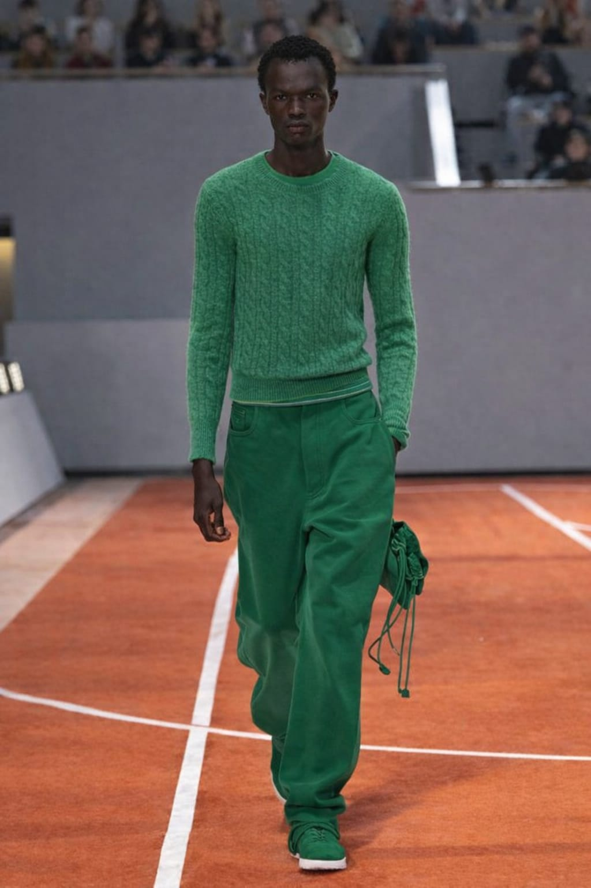
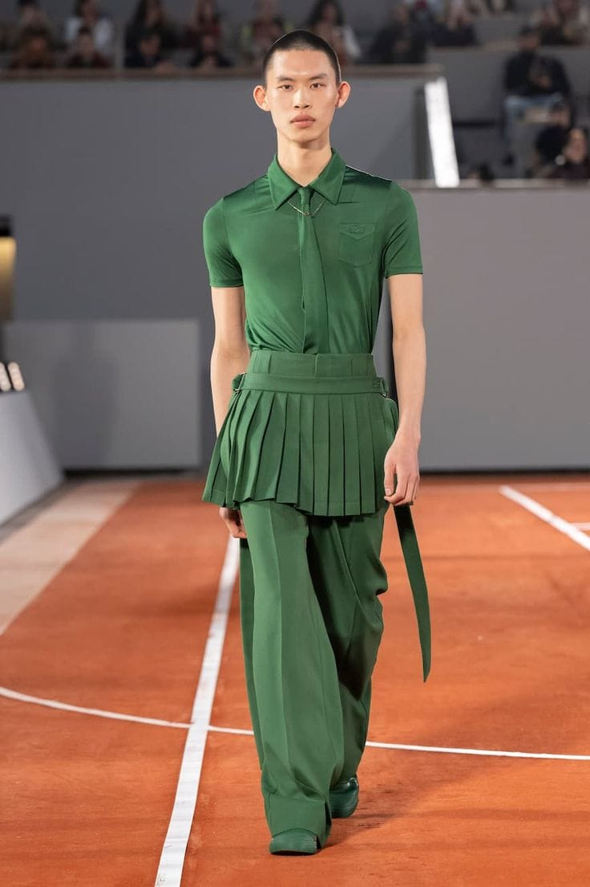
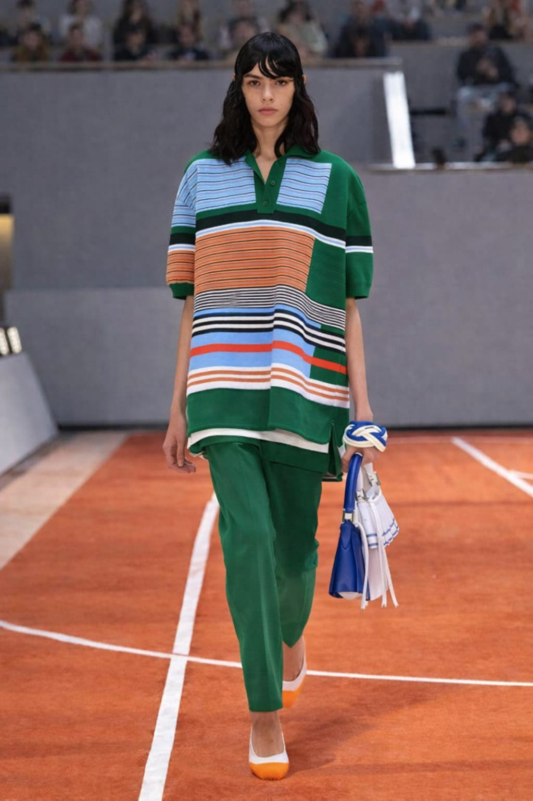

Verão - 2026






O verão da Amelia Frirenze traz leveza e movimento, com cores vibrantes inspiradas no pôr do sol.
Tecidos fluidos e modelagens que acompanham cada gesto com elegância.
Peças versáteis, perfeitas para o dia à beira-mar ou para momentos descontraídos na cidade.